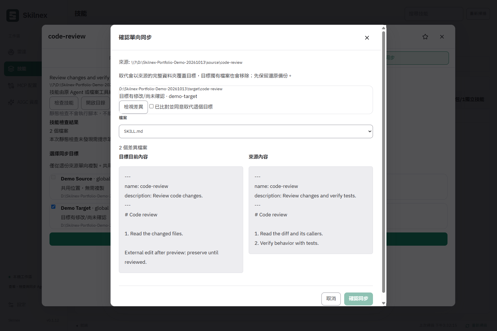

Less folder hunting.
More finding.
See sources, agents, and global or project locations together. Search the full text. Read SKILL.md and attachments without jumping between folders.
Your skills. Your way of working.
Different agents. One clear view.
Find, read, and organize
local skills.
Then review before you
sync.
Windows x64 · Local-first · You confirm every sync

The agents you already use. Less back-and-forth.
Built-in skill-directory detection, plus your own custom directories.
More room for the work that matters
See sources, agents, and global or project locations together. Search the full text. Read SKILL.md and attachments without jumping between folders.
Save your favorites, leave a note for next time, and group skills around the way you work. Ready when you need them again.
Choose a source and targets, then review the whole folder's differences. Approve local edits separately. Keep a copy before replacing anything.
Try it yourselfMCP settings, in view.Read existing configurations and agent associations. No server startup or configuration changes.
Prompts, within reach.Categories, tags, favorites, and copying, with JSON import and export.
A closer look
From comparing changes to confirming a sync,
in under a
minute. See how you stay in control.
A real desktop recording, using demonstration data.


Try it for yourself
Choose a target. Review the changes. Confirm.
Try Pi to see
how local edits need your approval.
Fictional data. This demo never touches your local files.
Codex is selected. See what will be copied first.
Select your targets, then preview the changes.
See the
full picture before the next step.
Demo complete. No real files were changed.
Make more of the skills you already have
Keep your skills in the tools you know. No need to start over.
Requires Windows x64 and Microsoft WebView2 Runtime. The installer can download a missing Runtime; the portable edition needs it too.
Find local agents. Add projects and custom directories as needed.
Check the source, explore attachments, and leave a note.
Choose targets, review the differences, and confirm the copy.
Before you get started
Windows x64 with Microsoft WebView2 Runtime. Follow the installer, or extract the portable edition completely and run Skilnex.exe.
Sync replaces the target folder with the source, so files found only in the target may be removed. Review the differences first. Local edits need separate approval, and changes after preview stop the sync. A copy is saved before replacement. You can preview recovery from the activity log; further changes to the files require another review.
Built-in skill-directory detection for Codex, Claude Code, OpenCode, Pi, Hermes, and OpenClaw, plus custom directories and Git projects. Static checks do not run skills; loading still depends on each agent's settings and support.
Inventory, reading, organization, and sync work locally without uploading your skill content. Downloads, GitHub imports, and app updates need a network connection.
Review file-by-file differences, approve existing edits, and keep a copy before replacement. Search, favorites, and notes make the next time easier too.
Less organizing. More focus.
SKILL.md
references/checklist.md